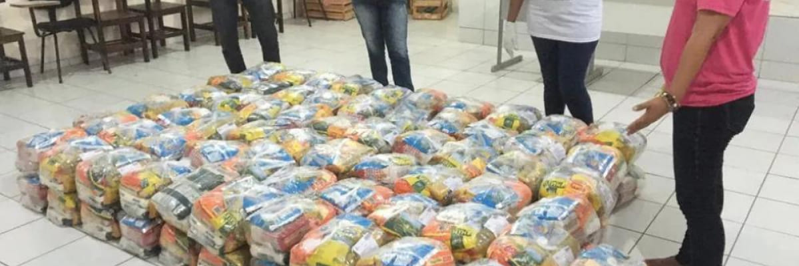

Uma solução para investimento em políticas sociais em São Paulo seria a implementação de programas voltados para a redução das sociais e combate à pobreza. Isso poderia incluir a criação de bolsas de estudos, programas de capacitação profissional e incentivos para a geração de emprego e renda em comunidades carentes.
https://vilainternacional.org.br/as-ongs-e-o-terceiro-setor/Além disso, é importante que as políticas sociais sejam pensadas de forma integrada, envolvendo diversas áreas como educação, saúde, moradia, segurança, entre outras. Isso permite uma abordagem mais ampla e efetiva, que considera as necessidades específicas de cada e população
 https://www.uema.br/2020/05/uema-encerra-campanha-solidaria-com-200-cestas-de-alimentos-doadas-para-o-cras-da-cidade-operaria/Outra medida que pode contribuir para o fortalecimento das políticas sociais é a criação de parcerias entre o poder público e a iniciativa privada, visando a implementação de projetos conjuntos que promovam o desenvolvimento social e econômico de São Paulo.